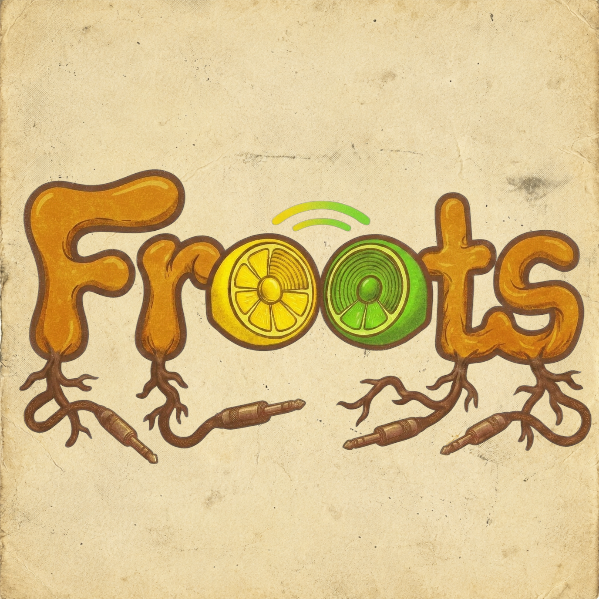

Reggae & funk · Munich
Deep pocket groove.
Warm reggae pulse, deep funk pockets, and good vibrations grown in Munich.

A little bit about us
Munich-grown rhythm.
Replace this with your actual band story. Keep it human and specific: how the band formed, what you enjoy playing together, and what a Froots gig feels like.
You might mention real influences, the people and instruments in the band, whether you play original material or selected covers, and the kind of groove you want to share with an audience.
More about Froots